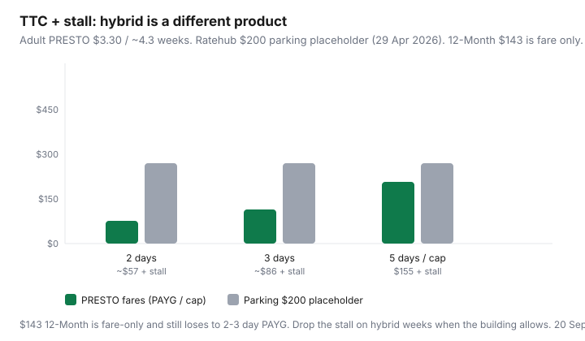

Transportation · Hybrid work
How to negotiate hybrid work that actually cuts Canadian commuting costs
Hybrid policies still sell a five-day identity: the Adult 12-Month, the Compass monthly, the stall in P2. You go in Tuesday and Thursday and keep paying for Wednesday. The negotiation that saves money is not “I want to work from home.” It is a calendar, a fare product, and a parking line that match the days you are actually at a desk. Canadian transit already has hybrid-shaped products — TTC capping, GO’s loyalty ladder, Compass stored value. Use them in the email.
Related: taxable transit subsidies, TTC cap vs $143, GO PRESTO, Compass after 1 Jul 2026.
Not HR or tax advice. Managers own coverage. CRA owns benefits. This page is a cost packet you can attach — not a script that guarantees Tuesdays at home.
Key takeaways
- Quantify four lines: fares or fuel, parking, time, and the pass you will stop buying.
- TTC adult PRESTO is $3.30; 47 paid trips cap at $155.10 (1 Sep 2026). Two office days × two taps × ~4.3 weeks ≈ 17 trips ≈ $57. The $143 12-Month is then the expensive habit.
- GO and Compass monthlies still win on five-day, multi-zone commutes. They lose on honest 2-day weeks — that is the PAYG ladder and stored value work.
- Parking is the line that funds the proposal. Ratehub uses $200/month as a placeholder (29 Apr 2026). Downtown stalls laugh at that.
- Propose a trial with metrics. Fallback: compressed hours, winter remote, or one fewer stall — not a sulk.
Quantify your commute: fares, fuel, parking, time
One page, last 20 office days, not a feeling:
- Fares: export PRESTO or Compass history. Count paid trips. TTC transfers inside two hours are free and do not count toward the 47. GO One Fare quirks can zero a TTC tap — do not double-count.
- Fuel: three fill-ups ÷ kilometres on those days. Statistics Canada’s 14 Sep 2026 Daily put August gasoline +22.8% YoY. Use your pump, not the clip.
- Parking: cash, payroll deduction, or the stall you could rent. If the employer “includes” it, write the fair-market figure you would pay on the street — that may also be a taxable benefit.
- Time: door to badge-in, both directions, including the 12-minute walk from the lot you pretend is adjacent.
Worked sketch (labelled, Toronto): 3 office days, TTC both ways, no GO. 3 × 2 × 4.3 ≈ 26 paid trips × $3.30 = $85.80 — under the cap. Plus $16/day downtown lot × 13 days ≈ $208. Total ~$294 plus ~6 hours/week in motion. A 5-day version of the same commute is closer to the $155 cap plus $320 parking. The proposal is “give me two days back and I will drop the lot.”
Propose a hybrid schedule with cost and productivity framing
Managers hear “remote” as coverage risk. Write the office days first. Then the money. Then the work.
- Name the two or three days you will be in — align with stand-ups, lab days, or client hours.
- State the cost you will cut (stall, 12-Month, second car insurance) and the fare product you will switch to (cap / PAYG / stored value).
- Name the collaboration hours you will protect on home days (core 10–3, same Slack rules as the office).
- Offer a six- or eight-week trial with two metrics the manager already uses (cycle time, tickets, student outcomes — pick theirs).
- Name the on-site emergency rule: you will come in if X happens.
Do not lead with lifestyle. Lead with “this schedule costs the team the same coverage and costs the company one fewer stall.” If they pay the stall, that is their line too.
Transit pass products that fit 2–3 office days
| Pattern | Toronto (TTC) | GO / 905 | Metro Vancouver |
|---|---|---|---|
| 2 office days / week | ~17 paid trips; ~$57; stay on PAYG / cap | PAYG; you may never see the deep loyalty rungs | Stored value; skip the 1-zone monthly |
| 3 office days / week | ~26 trips; ~$86; still under 47 | Run the month in the GO guide — 3-day can still lose to a monthly on long distances | Do the 1-/2-zone break-even; many 3-day 1-zone riders stay stored |
| 5 office days / week | Cap $155.10 or 12-Month $143 if you ride hard all year | Monthly / loyalty ladder often wins | Monthly often wins, especially 2–3 zones |

Post-secondary monthly TTC at $128.15 is a different animal — students should not drop a cheap school product to “save” $40 of PAYG. U-Pass BC at $47.85 (Sep 2026–Aug 2027) is already the win if you have it.
When dropping a parking spot or second car becomes possible
One office-day cut does not always fund a dropped stall — some buildings bill parking by the month with no daily rate. Ask for a daily or a shared stall before you assume $0. If you pay street or a lot, days deleted are cash.
The second car is the larger hybrid prize. Keep the vehicle that does the 6:15 a.m. site. Replace the downtown hatchback with car-share days and the hybrid transit product. Price insurance + parking + fuel on that car, not Ratehub’s $1,373 financed average, unless it really is financed.
Taxable parking and transit benefit interactions (high-level)
If payroll already reports a stall or a pass, changing your days can change the taxable dollar — or it can keep reporting a stall you no longer use. Ask. CRA’s T4130 and parking topic are the federal starting point; Québec can differ. High-level only: do not assume “I WFH Thursday” automatically deletes a benefit. Details: employer transit subsidies.
Trial period and metrics for your manager
Six to eight weeks, one page at the end. Metrics they already review. Include the commute log so the money is visible: “Parking $0 those 8 weeks; PRESTO $79; I attended the two on-site days plus the Thursday incident.” If the trial fails on coverage, you still have a fare history — switch products even if the days stay at four.
Fallback if full remote is refused
- Two or three named office days instead of five.
- Compressed 9/10 or 8:00–4:00 to miss peak GO and a downtown lot after 3 p.m.
- Winter remote block (January–February) when the drive is the expensive, dangerous line.
- Drop the stall even if the days stay: transit plus the odd car-share for the late client dinner.
- If the job is genuinely site-bound, stop fighting days and fight the product (PAYG vs monthly, carpool, HOV). See carpool insurance notes.
Negotiation rule: attach a calendar and a fare product. “I would like Tuesdays and Thursdays in office, PRESTO PAYG, and to surrender the stall on 1 November” is a proposal. “Hybrid is better for focus” is a poster.
Sources & date stamps
- TTC fares and 1 Sep 2026 capping — $3.30 adult PRESTO, 47 trips, $155.10 cap; Adult 12-Month $143; post-secondary monthly $128.15.
- TransLink Compass / U-Pass BC $47.85 (1 Sep 2026–31 Aug 2027); 1 Jul 2026 fare increase context in the Compass guide.
- CRA T4130 taxable benefits and parking topic — high-level interactions only.
- Ratehub 2026 TCO (29 Apr 2026) — $200 parking placeholder; $1,373 blended ownership.
- Statistics Canada, The Daily, 14 Sep 2026 — gasoline +22.8% YoY (August).
Frequently asked questions
Does a hybrid schedule save money if I keep a monthly pass?
Only if the product matches the days. TTC fare capping (1 Sep 2026) charges adult PRESTO $3.30 until 47 paid trips ($155.10). Two office days a week often land near $55–$85 and never hit the cap. A leftover 12-Month at $143 is then a donation. Compass and GO have their own monthly-vs-PAYG math.
What numbers should I bring to my manager?
A one-page commute: fares or fuel, parking, door-to-desk minutes, and a proposed 2–3 day pattern with coverage hours. Add a six- or eight-week trial metric (tickets closed, client SLAs). Skip a manifesto about traffic.
Can hybrid let me drop a parking stall or a second car?
Sometimes. A $200–$400 stall or Ratehub’s $200 parking placeholder is the first line to cut. A second car is a larger win — run it against Communauto days. Do not drop the only car if one adult still has a five-day site the bus cannot hit.
How do taxable parking or transit benefits interact?
High-level: a stall or pass your employer provides can still be a taxable benefit (CRA T4130). If you stop parking, ask payroll to stop reporting the stall. If you switch from a five-day pass subsidy to stored value, ask whether the taxable dollar changes. Not tax advice.
What if full remote is refused?
Ask for two or three office days, compressed hours that miss peak GO, or a seasonal winter remote block. Bring the same cost sheet. A refused five-day remote is not the end of the fare math.